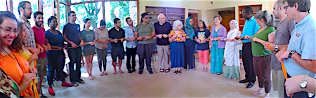

Friends,
The Stony Point Center, an FOR affiliate organziation in Stony Point, NY, has announced the seventh-annual "Farm the Land, Grow the Spirit" Peacemaking Summer Institute for Young Adults, ages 19 to 29.
The program, May 31 to Aug. 7, is free to those who are accepted.
The Stony Point Center Summer Institute is seeking Jewish, Christian and Muslim young adults, who are grounded in their religious tradition, serious about spirituality and the state of the planet, and excited by social activism in a multireligious context.
They offer a rich opportunity to live in a supportive community with peers. The community they form will be "nested" in the larger multifaith Community of Living Traditions at Stony Point Center (SPC), an intentional, residential community of Muslims, Jews and Christians who help run SPC and engage in hospitality, study, and nonviolence and social justice activism.
Apply online -- deadline Feb. 15, and space is limited!
Overview
The Summer Institute is multi-dimensional. Students will:
- engage in multifaith study and dialogue
- grow in their relationship to the land and to each other through farming
- live together in community
- study nonviolent approaches to justice and peace
Throughout the program, students will have opportunities for one-to-one mentoring sessions for spiritual and vocational guidance.
SPC believes that the religious traditions of the world have interrelated lessons to teach us all about welcoming "the other" and caring for the earth. Together, they constitute a spiritual ecology. The welfare of humanity now requires that we consciously rebalance that spiritual ecology -- acknowledging the precious uniqueness of each tradition while strengthening their mutual relations. Working in the SPC gardens is an integral part of the program.
Schedule
There are two sessions. Students can attend one or both, but are encouraged to come for both.
Session 1, May 31 to July 3, will focus on the strong thread of peace and nonviolence that runs through Islam, Judaism, and Christianity. Students will use what they learn to explore the social justice issues of immigration, gender and sexuality, race and mass incarceration, and religious conflict and peace building. This session will include the Muslim observance of Ramadan and the Jewish observance of Shavuot.
Holiday break, July 4 to July 9, is optional for those attending both sessions. Students may stay over the break and celebrate Eid as well as the July Fourth holiday. It will be a week of fun, rest and relaxation.
Session 2, from July 10 to August 7, will focus on what the three Abrahamic traditions, and some Indigenous faith traditions perspectives on Earth-care. During this session, students will explore the areas environmental justice, climate change, and food justice.
Apply
Visit the Stony Point Center website for more details -- including a growing list of scholars, teachers and activists who will be coming to teach.
Remember, the deadline is Feb. 15, and the Summer Institute is free to those who are accepted. Apply online now.
If you have questions, please contact FLGS@stonypointcenter.org. We encourage you to forward this message or share this video on social media with young adults or others you know who work with young adults. |